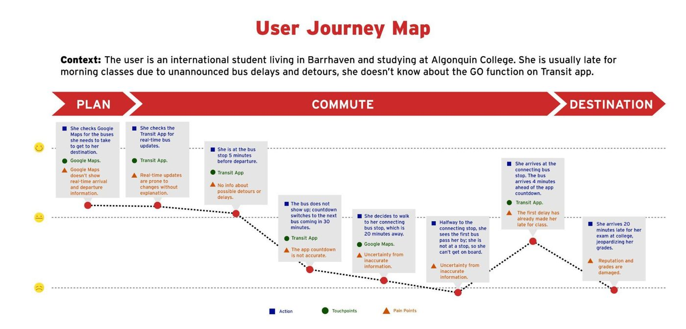
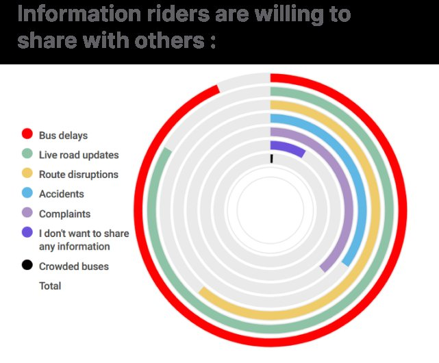
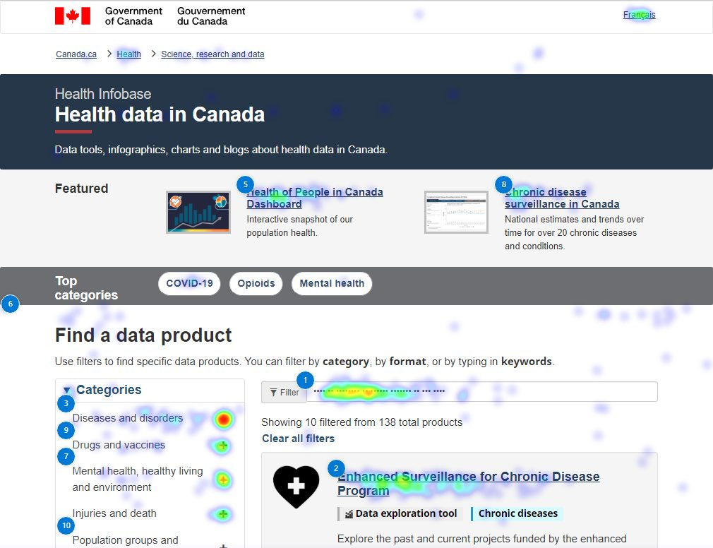
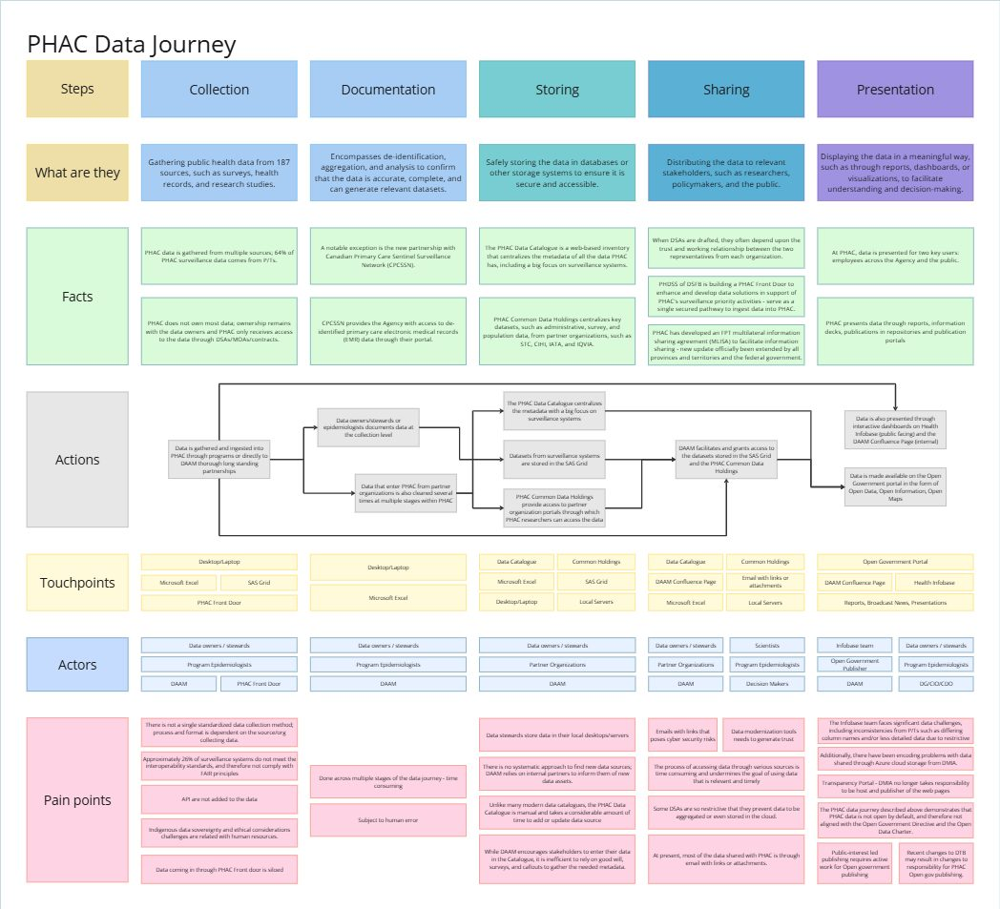

<title>Sharika Sadaf Research</title>
<link rel="preconnect" href="https://fonts.googleapis.com">
<link rel="preconnect" href="https://fonts.gstatic.com" crossorigin>
<link rel="stylesheet" href="https://fonts.googleapis.com/css2?family=Archivo:wght@500;600;700;800&family=IBM+Plex+Mono:wght@400;500&family=IBM+Plex+Sans:wght@400;500;600&display=swap">

<style>
/* Layout: single measured column on a civic-report grid; mono labels carry metadata, display face carries claims. */
:root{
  --paper:#F4F3F0; --surface:#FFFFFF; --ink:#16191E; --muted:#5C6570;
  --line:#DCDAD4; --accent:#0F4FD8; --signal:#C81E24;
  --display:"Archivo","Helvetica Neue",Arial,sans-serif;
  --body:"IBM Plex Sans","Segoe UI",system-ui,sans-serif;
  --mono:"IBM Plex Mono",ui-monospace,SFMono-Regular,Menlo,monospace;
}
@media (prefers-color-scheme: dark){
  :root:not([data-theme="light"]){
    --paper:#0E1116; --surface:#161A21; --ink:#ECEDEF; --muted:#9AA3AE;
    --line:#272C35; --accent:#6C9BFF; --signal:#FF6B6B; color-scheme:dark;
  }
}
:root[data-theme="dark"]{
  --paper:#0E1116; --surface:#161A21; --ink:#ECEDEF; --muted:#9AA3AE;
  --line:#272C35; --accent:#6C9BFF; --signal:#FF6B6B; color-scheme:dark;
}

*{box-sizing:border-box}
body{margin:0;background:var(--paper);color:var(--ink);font-family:var(--body);font-size:16px;line-height:1.6;-webkit-font-smoothing:antialiased}
img{max-width:100%;height:auto;display:block}
a{color:var(--accent)}
.wrap{max-width:1060px;margin:0 auto;padding-inline:20px}

/* Nav */
.nav{position:sticky;top:env(safe-area-inset-top,0px);z-index:50;background:color-mix(in srgb,var(--paper) 88%,transparent);backdrop-filter:blur(10px);border-bottom:1px solid var(--line)}
.nav .wrap{display:flex;align-items:center;gap:20px;padding-block:12px}
.mark{font-family:var(--display);font-weight:800;letter-spacing:-.02em;font-size:17px;text-decoration:none;color:var(--ink);white-space:nowrap}
.mark span{color:var(--accent)}
.navlinks{margin-left:auto;display:flex;align-items:center;gap:6px;flex-wrap:wrap}
.navlinks a{font-family:var(--mono);font-size:12.5px;letter-spacing:.04em;text-transform:uppercase;text-decoration:none;color:var(--muted);padding:7px 10px;border-radius:2px}
.navlinks a:hover{color:var(--ink)}
.navlinks a.cta{background:var(--accent);color:#fff;font-weight:500}
.navlinks a.cta:hover{color:#fff;opacity:.9}

/* Hero */
.hero{padding-block:56px 40px;border-bottom:1px solid var(--line)}
.eyebrow{font-family:var(--mono);font-size:12px;letter-spacing:.14em;text-transform:uppercase;color:var(--accent);margin:0 0 18px}
h1{font-family:var(--display);font-weight:800;font-size:clamp(34px,5.6vw,60px);line-height:1.02;letter-spacing:-.025em;margin:0;max-width:19ch;text-wrap:balance}
.hero .lede{margin:22px 0 0;max-width:62ch;font-size:17.5px;color:var(--muted)}
.heroimg{margin-top:34px;border:1px solid var(--line);background:var(--surface)}
.heroimg figcaption{font-family:var(--mono);font-size:11.5px;color:var(--muted);padding:10px 12px;border-top:1px solid var(--line);line-height:1.5}

/* Section heads */
.sec{padding-block:52px;border-bottom:1px solid var(--line)}
.sechead{display:flex;align-items:baseline;gap:14px;margin:0 0 30px}
.sechead h2{font-family:var(--display);font-weight:700;font-size:13px;letter-spacing:.16em;text-transform:uppercase;margin:0}
.sechead .rule{flex:1;height:1px;background:var(--line)}
.sechead .count{font-family:var(--mono);font-size:12px;color:var(--muted)}

/* Projects */
.proj{display:grid;grid-template-columns:1.15fr .85fr;gap:36px;align-items:start;padding-block:34px;border-top:1px solid var(--line)}
.proj:first-of-type{border-top:0;padding-top:0}
.proj > div{min-width:0}
.client{font-family:var(--mono);font-size:12px;letter-spacing:.08em;text-transform:uppercase;color:var(--muted);margin:0 0 10px}
.proj h3{font-family:var(--display);font-weight:700;font-size:clamp(22px,2.9vw,30px);line-height:1.12;letter-spacing:-.018em;margin:0 0 14px;text-wrap:balance}
.proj p{margin:0 0 16px;color:var(--muted);max-width:52ch}
.role{font-family:var(--mono);font-size:12px;color:var(--ink);border-left:2px solid var(--accent);padding-left:10px;margin:0 0 20px;line-height:1.5}
.metrics{display:flex;flex-wrap:wrap;gap:0;margin:0 0 20px;border-top:1px solid var(--line)}
.metric{flex:1 1 130px;min-width:0;padding:14px 16px 14px 0;border-bottom:1px solid var(--line)}
.metric .n{font-family:var(--display);font-weight:700;font-size:26px;line-height:1;letter-spacing:-.02em;font-variant-numeric:tabular-nums}
.metric .l{font-family:var(--mono);font-size:11px;line-height:1.45;color:var(--muted);margin-top:7px;text-transform:uppercase;letter-spacing:.05em}
.thumb{border:1px solid var(--line);background:var(--surface)}
.thumb figcaption{font-family:var(--mono);font-size:11px;color:var(--muted);padding:9px 11px;border-top:1px solid var(--line);line-height:1.5}

details{border-top:1px solid var(--line);margin-top:4px}
summary{cursor:pointer;list-style:none;font-family:var(--mono);font-size:12.5px;letter-spacing:.06em;text-transform:uppercase;color:var(--accent);padding:14px 0;display:flex;align-items:center;gap:9px}
summary::-webkit-details-marker{display:none}
summary::after{content:"+";font-size:15px;line-height:1}
details[open] summary::after{content:"–"}
summary:focus-visible{outline:2px solid var(--accent);outline-offset:3px}
.detail{padding-bottom:22px}
.detail h4{font-family:var(--display);font-weight:600;font-size:14px;letter-spacing:.02em;margin:18px 0 7px;color:var(--ink)}
.detail h4:first-child{margin-top:0}
.detail p, .detail li{color:var(--muted);font-size:15px;margin:0 0 9px}
.detail ul{margin:0 0 9px;padding-left:19px}
.quote{border-left:2px solid var(--signal);padding:4px 0 4px 14px;margin:14px 0;font-size:15.5px;color:var(--ink)}
.quote cite{display:block;font-family:var(--mono);font-size:11px;font-style:normal;color:var(--muted);margin-top:7px;text-transform:uppercase;letter-spacing:.06em}

/* About */
.about{display:grid;grid-template-columns:1fr 1fr;gap:40px}
.about > div{min-width:0}
.about p{margin:0 0 14px;max-width:56ch}
.skills dt{font-family:var(--mono);font-size:11.5px;letter-spacing:.07em;text-transform:uppercase;color:var(--accent);margin-top:16px}
.skills dt:first-child{margin-top:0}
.skills dd{margin:5px 0 0;color:var(--muted);font-size:15px}

/* Contact */
.contact h2.big{font-family:var(--display);font-weight:800;font-size:clamp(28px,4.4vw,44px);letter-spacing:-.025em;line-height:1.08;margin:0 0 20px;max-width:20ch;text-wrap:balance}
.copyrow{display:flex;flex-wrap:wrap;gap:10px;align-items:center;margin-top:8px}
.field{font-family:var(--mono);font-size:14px;background:var(--surface);border:1px solid var(--line);padding:11px 14px;user-select:all}
button.copy{font-family:var(--mono);font-size:12px;letter-spacing:.05em;text-transform:uppercase;background:var(--ink);color:var(--paper);border:0;padding:12px 15px;cursor:pointer}
button.copy:hover{opacity:.87}
button.copy:focus-visible{outline:2px solid var(--accent);outline-offset:2px}

footer{padding-block:28px 40px}
footer .wrap{display:flex;flex-wrap:wrap;gap:12px;align-items:center;justify-content:space-between;font-family:var(--mono);font-size:11.5px;color:var(--muted)}

@media (max-width:820px){
  .proj{grid-template-columns:1fr;gap:24px}
  .about{grid-template-columns:1fr;gap:28px}
}
@media (prefers-reduced-motion:reduce){*{animation:none!important;transition:none!important}}
</style>

<nav class="nav">
  <div class="wrap">
    <a class="mark" href="#top">Sharika Sadaf<span>.</span></a>
    <div class="navlinks">
      <a href="#work">Work</a>
      <a href="#about">About</a>
      <a class="cta" href="#contact">Contact</a>
    </div>
  </div>
</nav>

<header class="hero wrap" id="top">
  <p class="eyebrow">Service Design Researcher · Toronto</p>
  <h1>I find out where public services lose the people they serve.</h1>
  <p class="lede">Human-Centred Design researcher working in federal and municipal government. I run mixed-methods studies — interviews, surveys, usability testing, behavioural analytics — and turn what they show into journey maps, service blueprints and plans that leadership can act on.</p>
  <figure class="heroimg">
    
    <figcaption>User journey map · OC Transpo study, 2024 — where a rider's confidence degrades between planning a trip and arriving 20 minutes late.</figcaption>
  </figure>
</header>

<main>
<section class="sec wrap" id="work">
  <div class="sechead"><h2>Selected Work</h2><span class="rule"></span><span class="count">03</span></div>

  <!-- Project 1 -->
  <article class="proj">
    <div>
      <p class="client">OC Transpo / City of Ottawa</p>
      <h3>Finding where rider trust in transit information breaks down</h3>
      <p class="role">Team lead &amp; lead UX researcher · five-person cross-functional team · six months, 2023–24</p>
      <p>Ottawa riders had stopped believing what their transit provider told them. Delays went unannounced and app predictions did not match what happened at the stop. I set the research objectives and methodology, then led the study that established why — and what the City could do about it without waiting on development work.</p>
      <div class="metrics">
        <div class="metric"><div class="n">150+</div><div class="l">survey responses</div></div>
        <div class="metric"><div class="n">18</div><div class="l">interviews incl. City Councillors</div></div>
        <div class="metric"><div class="n">4</div><div class="l">interventions delivered to City leadership</div></div>
      </div>
      <details>
        <summary>Read the case study</summary>
        <div class="detail">
          <h4>Research question</h4>
          <p>What are the gaps in communication between the public transit provider in Ottawa and its riders?</p>
          <h4>Method</h4>
          <p>Mixed methods with Ottawa–Gatineau residents aged 18–36 who had used transit in the previous month: 50+ sources reviewed in secondary research, 10 rider interviews, 8 subject-matter-expert interviews, and a survey returning 150+ responses. Synthesis produced personas, a service blueprint and the journey map above.</p>
          <h4>What we found</h4>
          <p>Riders learned about disruptions too late to act on them, so one cancellation cascaded through the whole morning.</p>
          <blockquote class="quote">“I often only find out that my bus has been cancelled five minutes after it was supposed to arrive.”<cite>Rider interview</cite></blockquote>
          <p>And the features that would have helped most were the ones riders did not know existed.</p>
          <blockquote class="quote">“I only use Transit to check bus schedules. I didn’t know you could do so much more.”<cite>Rider interview</cite></blockquote>
          <p>The survey also showed appetite for two-way communication was already there: riders were willing to report delays, live road conditions and route disruptions. Very few declined to share anything at all.</p>
          <h4>How might we</h4>
          <p>How might we build awareness and confidence in rider-to-provider communication infrastructure, to encourage two-way communication and improve customer satisfaction among riders?</p>
          <h4>Recommendations</h4>
          <ul>
            <li><strong>Awareness and engagement (short term).</strong> A campaign on channels the City already owned — posters, station audio, social media, newsletters, how-to guides — showing riders what the app already does.</li>
            <li><strong>App improvements.</strong> Better in-app feedback and reporting so riders can report what they see.</li>
            <li><strong>Leverage rider data.</strong> Use rider reports for predictive analysis so real-time information gets more accurate.</li>
            <li><strong>Transparency and accountability.</strong> Show riders how their feedback changes the service, closing the loop.</li>
          </ul>
          <p>Presented to the City of Ottawa’s senior leadership team.</p>
        </div>
      </details>
    </div>
    <figure class="thumb">
      
      <figcaption>Survey finding — riders were already willing to report delays, road conditions and disruptions. Almost nobody declined to share.</figcaption>
    </figure>
  </article>

  <!-- Project 2 -->
  <article class="proj">
    <div>
      <p class="client">Public Health Agency of Canada</p>
      <h3>Proving why a national health data site was losing its users</h3>
      <p class="role">Sole researcher · Health Infobase homepage · Oct 2024 – Feb 2025</p>
      <p>Health Infobase is where the Government of Canada publishes public health data. The homepage was losing people before they reached the content, and mobile was worse than desktop. Nobody could say why. I audited four months of behaviour to replace the guesswork with evidence.</p>
      <div class="metrics">
        <div class="metric"><div class="n">5%</div><div class="l">of clicks on the featured section</div></div>
        <div class="metric"><div class="n">50%+</div><div class="l">of clicks on filters</div></div>
        <div class="metric"><div class="n">40%</div><div class="l">of mobile users lost before the content</div></div>
      </div>
      <details>
        <summary>Read the case study</summary>
        <div class="detail">
          <h4>Method</h4>
          <p>Click, scroll, attention and area heatmaps in Microsoft Clarity alongside Google Analytics, on desktop and mobile, analysed at bi-weekly intervals from October 2024 to February 2025 so that patterns rather than snapshots drove the conclusions.</p>
          <h4>Stated limitations</h4>
          <p>Findings rest mainly on heatmaps; rage and dead clicks from session recordings were not analysed extensively, and tablets were not tested. I flagged that further testing would be needed before any design change was deployed.</p>
          <h4>What the data showed</h4>
          <ul>
            <li><strong>Users navigate by filtering, not browsing.</strong> Whatever entry point they arrived from, people reached for category and filter. The featured section drew attention but only about 5% of clicks, while filters took over half. The page gave its best real estate to the element users cared least about.</li>
            <li><strong>Retention drops where the content begins.</strong> In a representative two-week window, 74% of users reached the average fold but only 60% got past the 75% mark.</li>
            <li><strong>On mobile the most-used elements sit below the fold.</strong> “Find a data product” had the highest click-through rate, yet needed two or three scrolls to reach. 40% left before arriving.</li>
            <li><strong>An outlier worth fixing.</strong> On a desktop window that is not full screen, the top category buttons stack vertically, lengthening the page and pushing everything else below the fold.</li>
          </ul>
          <h4>How might we</h4>
          <p>How might we optimize the homepage so users reach the “find a data product” section without scrolling past the average fold, specifically on mobile?</p>
          <h4>Recommendation</h4>
          <p>Bring the category and filter elements within the average fold; run a design sprint so the change is made with experience rather than placement in mind; prototype and test with users before deploying. Delivered as a presented report with a glossary, so colleagues unfamiliar with heatmap analysis could interpret the evidence themselves.</p>
        </div>
      </details>
    </div>
    <figure class="thumb">
      
      <figcaption>Click map, desktop — ranked hotspots on filters and categories.</figcaption>
    </figure>
  </article>

  <!-- Project 3 -->
  <article class="proj">
    <div>
      <p class="client">Public Health Agency of Canada</p>
      <h3>Reframing open data from a publishing task into a governance problem</h3>
      <p class="role">Lead UX researcher &amp; author · Open Data Action Plan 2025 · Feb 2025</p>
      <p>PHAC is required to make its data easy for Canadians to find, access and use. It was not meeting that bar and had no clear picture of why. I mapped the Agency's full data journey, ran the co-design that produced the fix, and wrote the 31-page plan that carried it forward.</p>
      <div class="metrics">
        <div class="metric"><div class="n">28%</div><div class="l">of 53 systems met the open data standard</div></div>
        <div class="metric"><div class="n">187</div><div class="l">data sources mapped across 6 branches</div></div>
        <div class="metric"><div class="n">31</div><div class="l">page plan adopted as strategy foundation</div></div>
      </div>
      <details>
        <summary>Read the case study</summary>
        <div class="detail">
          <h4>Method</h4>
          <ul>
            <li>Environmental scan, literature review and policy analysis against the Directive on Open Government and the G8 Open Data Charter.</li>
            <li>Qualitative research on the Agency's data practices, triangulated against a parallel quantitative evaluation of its surveillance systems.</li>
            <li>End-to-end journey mapping in Miro across five stages — collection, documentation, storing, sharing, presentation — capturing facts, actions, touchpoints, actors and pain points at each.</li>
            <li>A Crazy 8s co-creation workshop with DMIA managers, including the CCO and senior management team, to validate findings and generate solutions.</li>
            <li>A prioritization exercise in Microsoft Forms, ranking the recommendations the managers themselves produced.</li>
          </ul>
          <h4>What the research found</h4>
          <ul>
            <li>Only 28% of surveillance systems met the minimum performance standard for open data; 42% met transparency and 57% met interoperability.</li>
            <li>Over 60% reported difficulties with timeliness, privacy and open data, most caused by external partnership constraints rather than internal capability.</li>
            <li>Notifiable disease data carried a two-year dissemination lag on a management cycle of more than twelve months.</li>
            <li>The core insight: open data is inseparable from data strategy, governance and standards. It has to be built into them from the start, not added at the end of the data journey.</li>
          </ul>
          <h4>Outcome</h4>
          <p>Delivered February 2025, setting out initiatives to standardize Data Sharing Agreements, establish regular engagement with surveillance systems, advocate for data governance, and create pathways to make data open by default. The Agency was restructuring as the work concluded and the commissioning division was being dissolved, so I wrote the plan to be picked up by whichever team inherited the mandate — it became the foundation for a multi-year open data strategy.</p>
        </div>
      </details>
    </div>
    <figure class="thumb">
      
      <figcaption>The PHAC data journey — five stages, with actors, touchpoints and pain points at each.</figcaption>
    </figure>
  </article>
</section>

<section class="sec wrap" id="about">
  <div class="sechead"><h2>About</h2><span class="rule"></span></div>
  <div class="about">
    <div>
      <p>I came to design research from programme work. Before government I ran seven incubation programmes for early-stage social enterprises, co-designed a waste-to-value programme in Cox's Bazar with UNDP and Sida, and facilitated design sprints for a water delivery startup in Kenya. That background is why I care less about research as a deliverable and more about whether anything changes afterwards.</p>
      <p>What I look for is the gap between how a service is designed and how people actually move through it. Usually it is not where the organisation thinks it is.</p>
      <p>I work in English, hold TCPS 2 certification for research involving human participants, and studied Interdisciplinary Human-Centred Design at Algonquin College.</p>
    </div>
    <dl class="skills">
      <dt>Research methods</dt>
      <dd>Generative and evaluative design research, mixed methods, problem definition, user and stakeholder interviews, surveys and questionnaires, usability testing, contextual inquiry, behavioural analytics, policy analysis</dd>
      <dt>Facilitation &amp; co-design</dt>
      <dd>Workshops, co-creation sessions, Crazy 8s, design sprints, prioritization exercises, stakeholder and public engagement, teaching design methods</dd>
      <dt>Artefacts</dt>
      <dd>Personas, customer journey maps, service blueprints, systems maps, empathy maps, wireframes, “How Might We” frameworks, research reports, executive briefings</dd>
      <dt>Tools</dt>
      <dd>Figma, Miro, Microsoft Clarity, Google Analytics, Microsoft Forms, Microsoft 365, Trello</dd>
    </dl>
  </div>
</section>
</main>

<section class="sec wrap contact" id="contact">
  <div class="sechead"><h2>Contact</h2><span class="rule"></span></div>
  <h2 class="big">Working on a service that isn't reaching the people it's for?</h2>
  <p style="color:var(--muted);max-width:52ch;margin:0 0 22px">I'm open to research and service design roles in the public and non-profit sectors, in Toronto or remote.</p>
  <div class="copyrow">
    <span class="field" id="email">sharikasadaf.ca@gmail.com</span>
    <button class="copy" id="copyBtn" type="button">Copy email</button>
  </div>
  <div class="copyrow" style="margin-top:12px">
    <span class="field">343-552-5497</span>
    <a class="field" style="text-decoration:none" href="https://www.linkedin.com/in/sharikasadaf/">linkedin.com/in/sharikasadaf →</a>
  </div>
</section>

<footer>
  <div class="wrap">
    <span>© 2026 Sharika Sadaf · Toronto</span>
    <span>Service design research · Human-Centred Design</span>
  </div>
</footer>

<script>
(function(){
  var btn=document.getElementById('copyBtn'), field=document.getElementById('email');
  if(!btn||!field) return;
  btn.addEventListener('click', function(){
    var text=field.textContent.trim(), done=function(){ var o=btn.textContent; btn.textContent='Copied'; setTimeout(function(){btn.textContent=o;},1600); };
    if(navigator.clipboard&&navigator.clipboard.writeText){
      navigator.clipboard.writeText(text).then(done).catch(select);
    } else { select(); }
    function select(){
      try{ var r=document.createRange(); r.selectNodeContents(field); var s=window.getSelection(); s.removeAllRanges(); s.addRange(r); btn.textContent='Select & copy'; setTimeout(function(){btn.textContent='Copy email';},2200);}catch(e){}
    }
  });
})();
</script>
